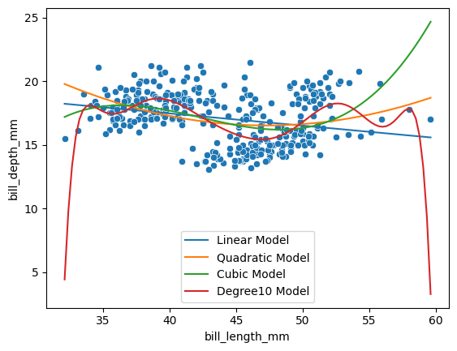

/Library/Frameworks/Python.framework/Versions/3.10/lib/python3.10/site-packages/sklearn/base.py:439: UserWarning: X does not have valid feature names, but StandardScaler was fitted with feature names
warnings.warn(
/Library/Frameworks/Python.framework/Versions/3.10/lib/python3.10/site-packages/sklearn/base.py:439: UserWarning: X does not have valid feature names, but StandardScaler was fitted with feature names
warnings.warn(
/Library/Frameworks/Python.framework/Versions/3.10/lib/python3.10/site-packages/sklearn/base.py:439: UserWarning: X does not have valid feature names, but StandardScaler was fitted with feature names
warnings.warn(
/Library/Frameworks/Python.framework/Versions/3.10/lib/python3.10/site-packages/sklearn/base.py:439: UserWarning: X does not have valid feature names, but StandardScaler was fitted with feature names
warnings.warn(

Are any of the models above underfitting the data? If so, which ones and how can you tell?
Are any of the models above overfitting the data? If so, which ones and how can you tell?
Which of the above models do you think fits the data best and why?
Underfitting: none
Overfitting: Degree 10 model (too many changes in concavity)
Best fit: Either linear or cubic (data is pretty spaced out evenly so linear might work well, and cubic tends to share the most similar curve to the trend of the data points)